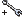

Kontextmenü des CAD-Dokuments¶
Haben Sie durch eine Suche eine Trefferliste erhalten (siehe CONTACT Elements Client Referenz), so können Sie die CAD-Dokumente der Trefferliste über ihr Kontextmenü bearbeiten. Markieren Sie dazu einen CAD-Dokumentdatensatz in der Trefferliste und öffnen Sie mit der rechten Maustaste das zugehörige Kontextmenü.
Bemerkung
Das Kontextmenü des CAD-Dokumentdatensatzes unterscheidet sich im wesentlichen nicht vom Kontextmenü des Dokumentdatensatzes (siehe auch Anwendungshandbuch zu CONTACT Documents). Im Folgenden werden daher nur die Kontextmenüpunkte erklärt, die besondere CAD-Dokumentoperationen und Aufrufe der Beziehungen eines CAD-Dokuments zu anderen Objekten beinhalten.
Bemerkung
Für eine Erklärung der Symbole des Kontextmenüs siehe CONTACT Elements Client Referenz.
- Importieren
- Importieren eines CAD-Dokuments in das System, siehe Importieren.
 Exportieren
Exportieren- Exportieren eines CAD-Dokuments aus dem System, siehe Exportieren.
- Referenzstruktur
- Die Referenzstruktur stellt jene Dokumente dar, die durch das Ausgangsdokument referenziert werden, siehe Referenzstruktur.
- Verwendungsstruktur
- Die Verwendungsstruktur stellt jene Dokumente dar, die das Ausgangsdokument referenzieren, siehe Verwendungsstruktur.
 Änderungshistorie
Änderungshistorie- Zeigt die an dem CAD-Dokument vorgenommenen Änderungen an, siehe Änderungsmitteilung / Änderungshistorie.
- Beziehungen
- Stückliste
- Listet die Stückliste auf, siehe CONTACT Elements Client Referenz.
- Statusprotokoll
- Alle bis dato erfolgten Statusänderungen zu einem Artikel werden in einem Statusprotokoll dokumentiert und in Listenform in einem separaten Dialog angezeigt.